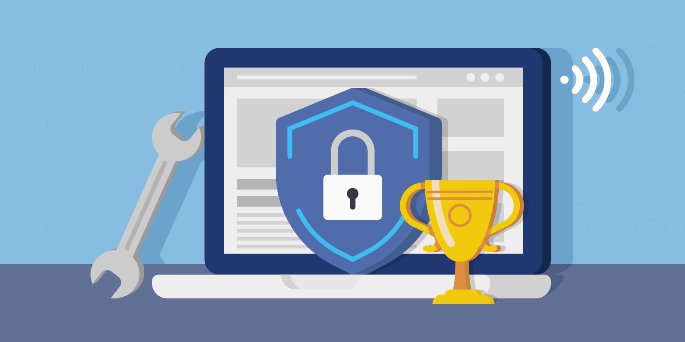

Protecting Your Digital World
In today's digital age, safeguarding our personal information and maintaining digital privacy and security has become paramount. The rapid advancement of technology and the increasing integration of digital tools into our daily lives have given rise to a host of new opportunities and conveniences. However, they have also exposed us to a myriad of potential threats. Digital privacy and security are vital because they underpin our ability to trust and engage with the digital world. Without these abilities, our sensitive information, from financial details to personal communications, is vulnerable to malicious actors. The growing prevalence of data breaches, where vast troves of personal data are compromised, and the looming specter of identity theft underscore the pressing need for robust digital safeguards. As we navigate the digital landscape, understanding the importance of digital privacy and security is not just a matter of personal protection but a collective responsibility to preserve the integrity of our increasingly interconnected world.
Now, we invite you to take a proactive step in protecting yourself and your digital presence. Explore the information and resources we have to offer by clicking on the links to our other pages. Whether you're seeking tips on safeguarding your online presence, staying updated on the latest cybersecurity trends, or learning how to protect your sensitive data, our website is a valuable hub for all your digital security needs. Empower yourself with the knowledge and tools necessary to navigate the digital world securely and confidently. Together, we can fortify our online presence and build a safer digital environment for all. Click on those links on the left and let's embark on this journey towards enhanced digital privacy and security.